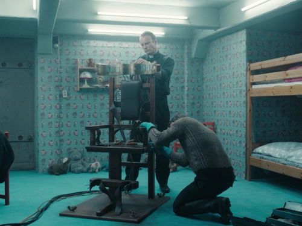
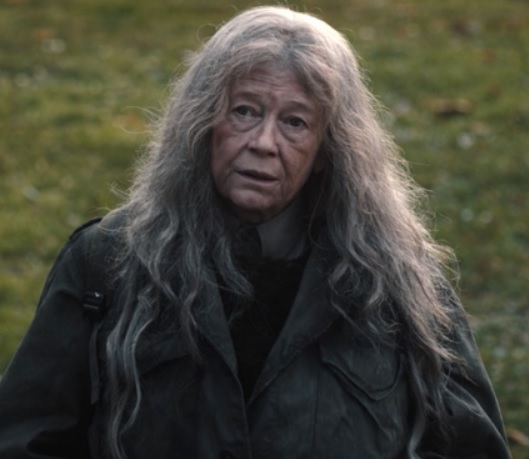
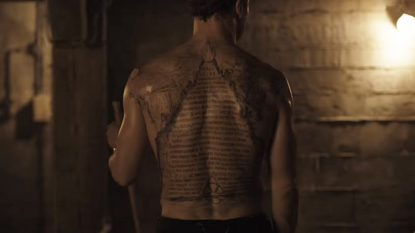
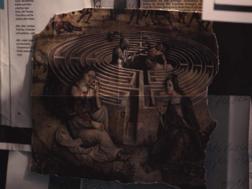

Claudia vs Noah
Estrenos parece ser la historia de una guerra entre Claudia Tiedemann y Noah por controlar los viajes en el tiempo.
Noah
El principal antagonista es Noah, un padre que parece ser inmortal gracias a su habilidad para moverse con facilidad entre décadas. Vive como un padre, pero evidentemente no cree en Dios. En cierto momento, cuando explica sus objetivos, Noah implica que está intentando controlar el poder de los viajes en el tiempo para salvar a la humanidad de si misma. Noah utiliza un bunker subterráneo en el bosque para construir su máquina del tiempo.
“El mundo está destinado a ser destruido. Pero esto de aquí es nuestra Arca” dice Noah, mientras señala a Helge la silla con amarras que construyó en el bunker. “Y yo soy Noé. Si podemos controlar esta energía, podremos cambiarlo todo. Entonces podremos decidir el destino del mundo, removiendo toda maldad y todo dolor. Crearemos una máquina del tiempo que reordene todo, el principio y el fin.”
Esto es lo que el Jonas del futuro le explica a la versión más joven de sí mismo cuando se encuentra atrapado en el bunker de Noah:
“Esto es una especie de prototipo de máquina del tiempo. Tú eres el conejillo de indias. El pasaje en la cueva está justo debajo de este bunker. Si se abre, la energía corre por este cuarto. Pero necesita ser incrementada. No es un auto DeLorean como en la película, ni usa vapor. La primera máquina del tiempo es un bunker con cuatro paredes. Pero aún no funciona bien.”
Noah recluta a Helge para ayudarlo. Se cree que Noah envió a Helge de vuelta a 1953 con su familia, despues de que Ulrich lo atacara y se despertara en el bunker y viajara a 1986. Asi, juntos viajan a través del portal formado por un agujero de gusano en la cueva de Windem para secuestrar a los niños como conejillos de indias en la máquina del tiempo que construyen en el bunker. Cada vez que el portal se abre debajo del bunker, la silla amplifica la señal, pero como la máquina no funciona correctamente, los niños mueren mientras son transportados en el tiempo con los tímpanos destrozados y los ojos quemados.
Claudia
A diferencia de Noah, vemos a Claudia transformarse desde una pequeña niña hasta una mujer anciana a través de las décadas. En 1953, Claudia es una niña inteligente que ayuda a Helge con tutorías para la escuela. Es la hija de Egon Tiedemann, el oficial de policía que investiga la muerte de los dos niños cuyos cuerpos aparecieron en el lugar de construcción de la planta nuclear.
Claudia conoce al joven Tronte Nielson, el padre de Ulrich, y junto a Helge caminan por el bosque pasando frente a las cuevas. Cuando Claudia se aparta de Helge, el niño toma una rama y la lanza dentro de la cueva para que el perro de Claudia lo vaya a buscar. El perro se pierde, dejando entender que de alguna manera entró al portal.
Adelantémonos a 1986, y Claudia se ha convertido en la nueva gerente de la planta nuclear de Winden. Tiene una hija, Regina, pero no se hace ninguna mención de que tenga marido. Tiene un romance con Tronte Nielson, quien está casado con Jana. Mads, el hijo de Tronte y Jana (y hermano de Ulrich) fue secuestrado y asesinado por Helge y Noah. Pero en 1986 nadie sabe lo que le ocurrió al niño. Claudia encuentra una discrepancia en los datos reportados en la planta nuclear, y su antiguo jefe, Bernd Doppler (el padre de Helge) le dice que hubo un accidente que produjo una fuga de radiación durante el verano. Mientras investiga la sección de la cueva donde Bernd almacena los barriles con desechos radiactivos, Claudia encuentra a su poodle de 1953, como si no hubiera pasado ni un minuto.
A partir de ese momento, las acciones de Claudia son un misterio. Como Helge le regaló el libro de “Viaje en el tiempo” lo cual puede ser una instrucción de Noah. El libro es un estudio de los viajes en el tiempo, el ciclo Sol-Luna y la naturaleza de los agujeros de gusano que escribio H.G. Tannhaus entre 1953 y 1986. Por tanto, Claudia parece haber descubierto la verdad acerca del portal en la cueva.
En el 2019, aparece justo después de que el cuerpo de Mads cae desde un agujero de gusano en el bunker, y le dice a Peter y a Tronte, ya viejo, que deben mover el cuerpo para colocarlo en el lugar donde debe ser encontrado. Luego, les da un cuaderno de apuntes al que les hacen falta algunas páginas, para que puedan predecir cada evento subsecuente. También es mostrada viajando atrás hacia 1953 para darle los planos de un extraño aparato al relojero H.G. Tannhaus.
También sabemos que en el futuro al que Jonas es lanzado, presumiblemente 2052, Claudia vive en el mismo Bunker donde Noah alguna vez mantuvo a sus víctimas. Tiene una pared con fotografías, que hacen un mapa de todos los personajes que jugaron algún papel en los eventos de 1953, 1986 y 2019. Creemos que se verá con Jonas en el futuro, y lo convencerá para arreglar el aparato y deshacer toda la locura destruyendo el agujero de gusano. Pero todo parece ser parte del plan de Noah, que la hizo creer que destruirían el agujero de gusano cuando en realidad lo activan.
El Eterno Retorno
Estrenos se basa en el concepto filosófico de "El Eterno Retorno". La primera temporada de la serie no deja clara la perspectiva que toma sobre este concepto.
La primera interpretación de "El Eterno Retorno" es que el futuro es nuestro pasado y el pasado es nuestro futuro. El tiempo no transcurre en línea recta sino que no lleva al mismo punto donde estábamos. En este universo todo está predestinado y no se puede modificar.
La segunda interpretación es que el universo espacio-temporal tiene un inicio y un fin, y que el fin es el nuevo inicio de otro universo idéntico. En esta perspectiva hay posibilidad de cambio.
Hermeticismo
El hermeticismo es una creencia religiosa y filosófica que sigue Noah que se basa en el simbolo del nudo de la Trinidad.
La Tableta Esmeralda que tiene Noah tatuada en su espalda, contiene la frase en latin "sic mundus creatus est" o "asi se creo el mundo". Esta frase tambien esta grabada en la entrada al tunel de la cueva de Windem.
Los creyentes del hermeticismo y de los textos de la tableta esmeralda creen que todas las acciones estan interconectadas.
Estas creencias se acercan a las explicaciones de tiempo, espacio y ciclos infinitos del escritor H.G. Tannhaus.
Mitología griega: Mito de Ariadne y el Laberinto
A lo largo de la primera temporada de “Estrenos”, el mito de Ariadne se menciona o es aludido en varias ocasiones. Martha representa a Ariadne en su obra de teatro, y el Jonas adulto tiene varias fotos relacionadas con Ariadne en la pared de la habitación de su hotel.
En la mitología griega, Ariadne es la hija del Rey Minos en Creta. Minos puso a Ariadne a cargo del laberinto en la isla, que alberga a un Minotauro en el entro y es usado para sacrificios rituales.
De acuerdo con el mito, el héroe Theseus llegó al laberinto para matar al Minotauro. Ariadne se enamoró de Theseus y decidió ayudarlo a navegar fuera del laberinto dándole una bola de lana. Sin embargo, tras escapar de Creta Theseus abandona a Ariadne. Tanto Claudia como Jonas tienen conexiones temáticas con Ariadne y el mito del laberinto. Claudia parece ser la guardiana del portal en la cueva, dado que en algún momento le enseña a Jonas a navegar a través de él. Y Jonas parece ser Theseus, quien se ve a sí mismo como el héroe que debe derrotar al Minotauro, que podría ser una analogía para Noah o el agujero de gusano. También se aleja de Martha cuando se da cuenta que en realidad es su tía.